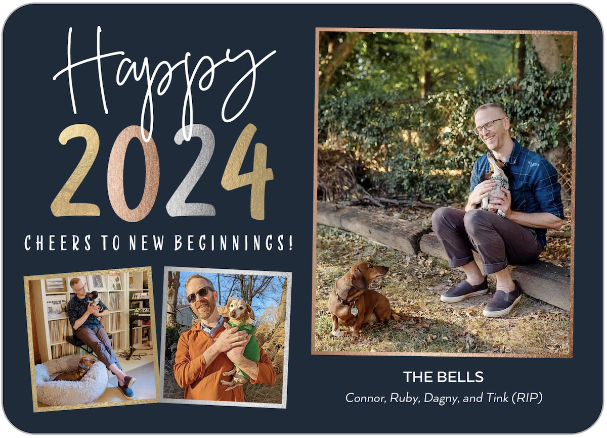
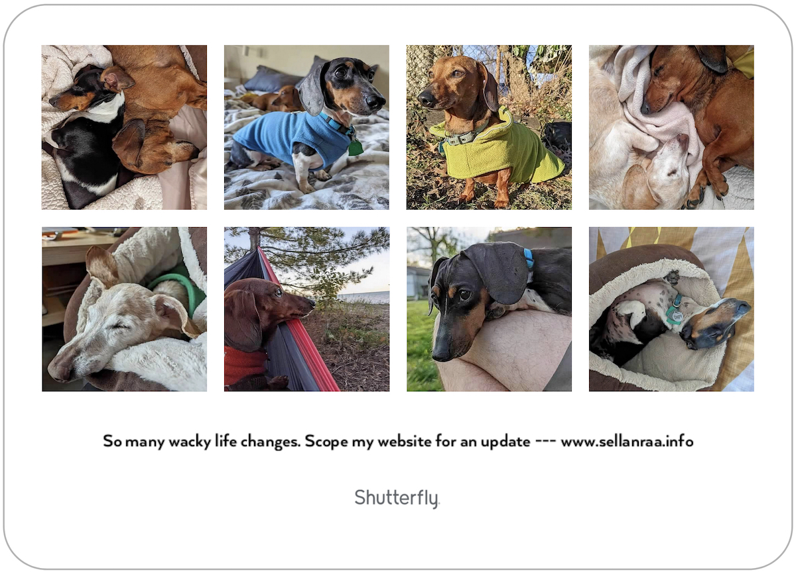

who and where i am
My name is Connor Joseph Bell (b. 1979 in Oshkosh, WI USA). Right now I’m living in Beechmont, a beautiful neighborhood in south Louisville with two wonderful little dachshunds that bring so much joy to my life. I’m a passionate person and spend my time pursuing knowledge and creativity. My curiosity feels insatiable and being creative, primarily through music, is an outlet for all that can’t be expressed so easily in life. After all, words are only one way to express oneself.
I’ll keep an archive of these little essays linked with my writing samples. I didn’t really intend this to be a blog, and it’s certainly not a regular update, but I do like that I can trace a bit of a line by looking these over.
23.12.05:


Hi all, hope you’re well.
There’s way too much to say for a short blurb on a holiday card, and if you didn’t get one, I apologize. If you’re not interested in a long update, the summary is that all is well here after some turbulence. For those who are interested in reading more, here goes:
A few years ago I decided it’d be fun to make a holiday card to update friends and family about what was up. Life has been wild the last few years, but now that things seem to be stabilizing, I figured it was time to return to what I hope will be an annual tradition barring more tumult. The card theme of ‘new beginnings’ was definitely intentional though.
First, and most obviously given the pics on my card, Deidre and I got a divorce. It felt pretty unexpected and rushed and she moved out late 2021 and it was all finalized soon after. Thankfully, it felt amicable. Given how much she seemed to be bottling all those years, she just seemed to want to flee. The little we’ve talked, she seems happier, which is obviously all you can hope for coming out of this sort of stuff. Note that the repetitive use of felt/seems/seemed leading up to this sentence is very intentional, because this is obviously my perspective only and that’s clearly pretty limited given how the whole marriage thing played out. I’ve tried to focus on growing from the experience as it feels like the most productive way to roll with what life throws at you. In all the reflection and therapy, I came to realize there were some things I accepted that maybe I shouldn’t have, so I can’t begrudge her for folding if there were things she didn’t want to work through. The benefit of her speedy ‘escape’ and it all seeming amicable is that she seemed fine with me keeping the house and dogs, which was really important in providing stability given my career tumult sliding into even more life tumult.
Leading up to her decision to leave, we had to say goodbye to the Murph-man, our first ween, who she had from the time he fit in the palm of her hand. This absolutely rocked us in August 2021. He was the best bub and converted me to the ween team and he will always have a special place in my heart for reminding me of the pure joy of having a dog. It never felt practical until I fell for Deidre and we became a family. Now I can’t imagine not having dogs in the family.
As I mentioned in the last card from December 20/January 21, I walked away from teaching during the pandemic in order to prioritize my mental health since the school didn’t seem too concerned about that dimension of health for their teachers. After struggling to find work that paid well enough to risk my physical health, upon being vaccinated, I worked in a couple warehouses. First, I was taking apart computers for recycling and then I moved to a motorcycle parts and accessories warehouse. After a few months of good old-fashioned sweat and heavy machinery, I pivoted to more of a logistics support and problem-solving position dealing with vendors. Both of these gigs were rewarding in their own ways, but it soon became clear that the promised raises weren’t coming fast enough and the job was unsustainable. It started to feel like the universe was telling me all I could do was teach given how few options seemed available. There were a couple teaching opportunities I was excited about that didn’t quite work out. I was trying to be selective to find an environment where I felt like I could live my values and the school would even remotely mirror those values. That was a big challenge given how many compromises are involved in private education. On Thanksgiving Day of 2022, I was offered a DevOps position with a company out of the Bay Area called CloudAvail. Increasingly, computing and data storage are happening in the cloud rather than in data centers on premises and that cloud setup and support seems to be a central theme for my job. Every day is different and it’s been incredibly stimulating and rewarding. Fundamentally, it meant the world that someone believed in me after the run I was on. I’m incredibly thankful to have found a place I feel is a fit. If you know people looking for work, recognize that it’s ugly out there. Really ugly. Hopefully, eventually we’ll start taxing the absurdly wealthy and be able to adequately support the vulnerable, which appears to only be a growing population in our dystopian reality.
With the stability of the job, this past year has been largely wonderful, which is why I can get back to the card. It feels like I’ve found a new normal after a couple of years of chaos. Strangely perhaps, I never really got too low or stopped believing in myself through it all, but it sure feels good to have the tumult in the rearview nevertheless. I think my steadiness through the storm speaks to what a wonderful support system I have in you all.
The only exception to the wonderful past year is my sweet little old peanut, Tink, passed in late March. Many of you never even met her as she was an old pooch we fostered and soon adopted during the peak of the pandemic. She was a persnickety old white-faced character and I miss her persistent grumbling and the booping with her nose when she wanted something. I knew I’d want another one soon, because having buddies is important, so I found a malnourished puppy mill rescue mini-ween that I named Dagny. The name has Norwegian roots and roughly translates to ‘new day’, which felt appropriate. I was thankful the rescue was ok with me giving her a new name, even if seven months later, I’m not convinced she knows it. I decided a younger pooch made sense, so Ruby could teach her the ways of Clan Murph as she transitions to the elder-ween. They’re my constant and loving companions and I’m thankful I could keep them in my life even if they complicate it at times.
Otherwise, I’ve enjoyed a simple and quiet life. The dogs love that I work from home. I’m generally exercising 6 mornings a week. I’m doing some therapy every few weeks. Travel-wise: I skied in Jackson Hole sans students and it was wonderful (and plan to do that annually), played a few solo shows (for the first time in four years) up north this fall, and hope to get back to Europe next year for a bigger adventure (Scotland? Iceland? Norway? Austria?). At ‘worst’, maybe I’ll go out to Montana in the summer for some outdoor time. I have also been doing a band for the first time in a long while these past two years, and it’s been really rewarding to get back to singing and playing guitar and there’s nothing like the energy of collaborating in a room with talented friends. I’ve also been keeping an eye on lakefront property up in Wisconsin, because that sure sounds nice. Ultimately, economic anxiety will probably keep me here for a good long while because Louisville is just that cheap and moving may feel like a social and artistic suicide that I’m not quite ready for.
Finally, since late summer, I have been courting a wonderful gal named Holly who I’m really enjoying having as a partner. It was a unique origin story due to some complex health challenges on her end, but I’m pleased to say we’ve finally been able to spend a lot of time together after some initial turbulence. She’s silly, she’s weird, she’s a refreshingly direct communicator (as upper midwesterners tend to be), and she’s beautiful. Needless to say, I’m totally smitten. Hopefully, you’ll all meet her soon enough.
One of the things I did after walking away from teaching was to join a Code Louisville class (effectively a computer programming jobs program) and my project turned into this personal website separate from music that I continue to maintain. Periodically, I post updates here. Those are archived in the ‘who and where i am’ Writing Samples link in the sidebar to the right.
I really am grateful and thankful every day to have such a supportive community of family and friends. In the words of an esteemed 20th c. poet: “Life is a highway, I want to ride it all night long.” These past few years certainly have been a hell of a ride and that’s what makes it all the more interesting, or as The Police sang in an entirely different context: “Life was easy, when it was boring.”
All the best.
fall 2023 currents
listening
Milford Graves / Hugh Glover / Arthur Doyle "Children of the Forest"
Rafael Toral "Wave Field" and "Sound Mind Sound Body"
Milford Graves / Peter Brötzmann / WIlliam Parker "Historic Music Past Tense Future"
the Sealed Knot Any and all
Joseph Jarman / Anthony Braxton "Together Alone"
Arnold Dreyblatt "Resolve"
Autechre "AE LIVE 22"
Tom Mudd "Guitar Cultures"
Tashi Dorji "Guitar Improvisations"
Neil Young "Harvest Moon"
John McGuire "Pulse Music"
Erykah Badu "New Amerykah: Part One (4th World War)" and "New Amerykah Part Two: Return Of The Ankh"
watching
The Silent Twins (2022)
The Hit (1984)
To Live and Die in L.A. (1985)
Wayne Shorter: Zero Gravity (2023)
Massacre at Central High (1976)
Prom Night (1980)
Phantasm (1979)
Sisters (1973)
The Shout (1978)
Dust Devil (1992)
The Brood (1979)
Maniac (1981)
The Prowler (1981)
Barbarian (2022)
Ravenous (1999)
Tom Petty: Somewhere You Feel Free (2021)
Dark Side of the Ring, season 4
Reservation Dogs, season 3
Only Murders in the Building, season 3
Dirty Mary, Crazy Larry (1974)
Bye Bye Barry (2023)
reading
"On Minimalism" by Kerry O'Brien and William Robin
"The Passenger" and "Stella Maris" by Cormac McCarthy
Sound American No. 30
Spectres, vol. 4
"The Garden of Seven Twilights" by Miguel de Palol
"My Effin' Life" by Geddy Lee
"Police Diaries" by Stewart Copeland
"Stay True: A Memoir" by Hua Hsu